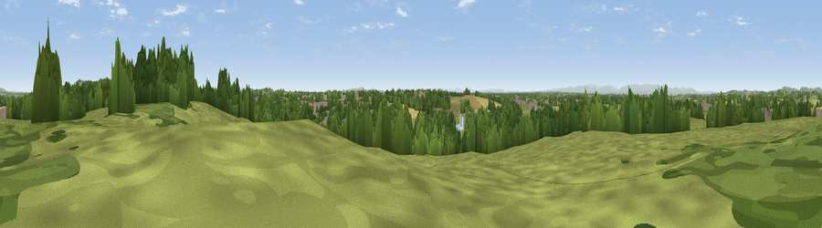

Viewpoint near Grindley Brook
#20825 in England · top 62% of its area beats it · near Grindley BrookThe view, rendered

A 360° render of this exact spot computed from the terrain model, tree cover and land cover — summer colours, afternoon light, calibrated against photographs of famous viewpoints. Real trees, hedges and buildings will differ in detail.
The panorama
Grey silhouette: terrain skyline in each direction (720 bearings, Earth curvature and refraction included). Dashed green: skyline with trees (+15 m) and buildings (+8 m) as obstacles. Blue strip: how far the ground is visible on each bearing.
Where the view opens
Wedge length = distance to the farthest visible ground on that bearing (vegetation-aware). Rings at 10, 25 and 50 km.
What fills the view
51% grassland · 26% woodland · 15% cropland · 8% built-up
Angular shares of the visible panorama (visual magnitude), not map area. Landscape diversity 0.52 (0–1 Shannon).
Key numbers
More beautiful places nearby
The staircase of upgrades: each row has a higher view potential than everything closer. Driving times are estimates from straight-line distance, calibrated against real road routing — check an actual route before setting out.
| Place | Direction | Drive | Score |
|---|---|---|---|
| Viewpoint near Tushingham | NE · 3 km | ~7 min | 55.4 |
| Wirswall Hill | NE · 3 km | ~7 min | 57.9 |
| Oat Hill | NW · 7 km | ~15 min | 58.6 |
| Viewpoint near Prees | SSE · 9 km | ~18 min | 60.7 |
| Viewpoint near Bickerton | NNW · 11 km | ~21 min | 76.4 |
| Viewpoint near Harthill | N · 13 km | ~24 min | 78.5 |
| Viewpoint near Harthill | N · 13 km | ~24 min | 80.5 |
| Viewpoint near Little Wenlock | SSE · 35 km | ~53 min | 84.2 |
52.97305, -2.70320 · source: screening · position refined by local search. Computed location — check access rights before visiting.